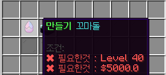

-
건차, 마을
▪️ 건차란? 자신의 땅을 보호하기 위한 건설차단(블럭)의 줄임말 입니다.
▪️ 건차 내 상자보호, 블럭보호, pvp 등을 타인으로 부터 지켜줍니다.
▪️ 동글서버의 건차는 F3+G키를 누르면 확인 할 수 있는 청크 선을 따라 자신의 땅을 지정할 수 있습니다.
▪️ 아래는 청크를 확인하고, 해당 청크를 자신의 땅으로 만드는 방법의 예시 입니다.
▪️ 자신의 땅의 대한 권한을 다른 유저에게도 주고싶다면, /ps add [유저이름]으로 권한을 주는 것이 가능합니다.
-

F3+G키를 눌러 마음에드는 청크를 골라주세요.

마음에드는 청크 안 아무곳에다 건차를 설치해 주세요.

총 4개의 청크를 깔끔하게 구매하는 방법입니다.
-
꼬마돌
▪️ 나의 지나온 세월을 담아내는 돌입니다.
▪️ 모든 직업 활동을 할 때 경험치가 쌓이며, 경험치로 꼬마돌을 제작할 수 있습니다.
▪️ 앞으로 업데이트될 동글 낚시, 동글 채광 등의 생활 도구 업그레이드를 할 수 있으며, 현재는 직업 업그레이드 시에 만 사용 가능합니다.
▪️ 꼬마돌로 할 수 있는 다양한 컨텐츠를 준비 중에 있습니다.
- 
-
연금술사의 배움의 룬
▪️ 꼬마돌을 수월하게 만들고 싶다면, 연금술사에게 배움의 룬을 구매해 사용해보세요!
▪️ 배움의 룬을 사용하면 일정한 경험치를 얻을 수 있습니다.